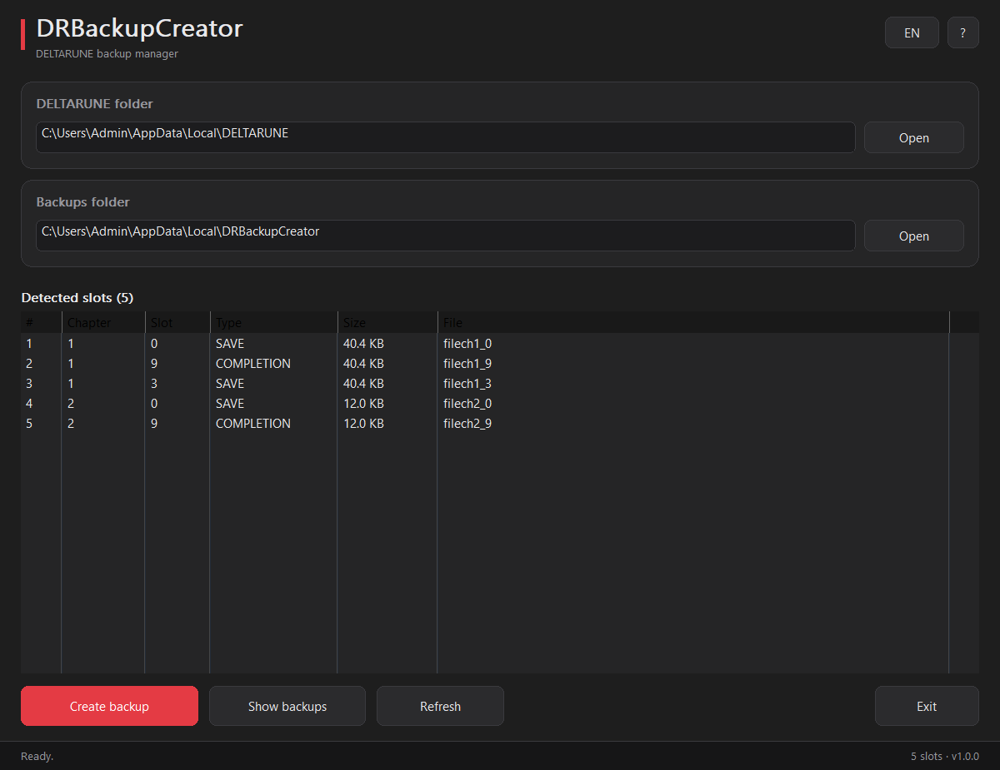

Never lose your DELTARUNE save again.
A small, fast backup manager for DELTARUNE. It finds your save slots, stores timestamped backups, and restores them in one click — with a native dark Windows app in English and Spanish, plus a scriptable CLI.

Everything you need, nothing you don't
Built as a native Win32 app: no Electron, no browser engine, no extra runtimes.
Native dark UI
Small Win32 executable with a custom dark theme, dark title bar and per-monitor DPI support.
English & Spanish
Pick your language on first launch; the app remembers it from then on.
One-click backups
Detects every filechX_Y slot, groups them by save and copies them into a timestamped folder.
Safe deletes
Deleting a backup sends it to the Recycle Bin, so nothing is ever really gone.
Full keyboard control
Refresh, back up, browse, restore and delete without touching the mouse.
Scriptable CLI
The same engine from the command line, for scripts and scheduled backups.
Three steps
Your saves live in %LOCALAPPDATA%\DELTARUNE; backups live in %LOCALAPPDATA%\DRBackupCreator.
Install
Run the installer, or use the portable ZIP and keep DRBackupCCore.dll next to drbc.exe.
Open it
Your slots are detected automatically. The game must be closed to create a backup.
Back up
Hit Create backup. Restore any snapshot later from Show backups.
Download DRBackupCreator
Windows 10/11, 64-bit. Free and open source under the GNU GPL v3.
- Installer with Start Menu shortcut
- Bilingual ES / EN interface
- CLI included in the same executable
- Your backups are never touched by uninstall
Automate it
Prefer a terminal? The GUI and the CLI share the same engine and the same backup folder.
# list detected slots drbc.exe --cli list # create a backup drbc.exe --cli backup # restore the newest one drbc.exe --cli restore 0
Shortcuts
Everything reachable from the keyboard.
| F5 | Refresh slots |
| Ctrl + B | Create backup |
| Ctrl + L | Show backups |
| Enter | Restore selected |
| Del | Delete selected |
| Esc | Close dialog |